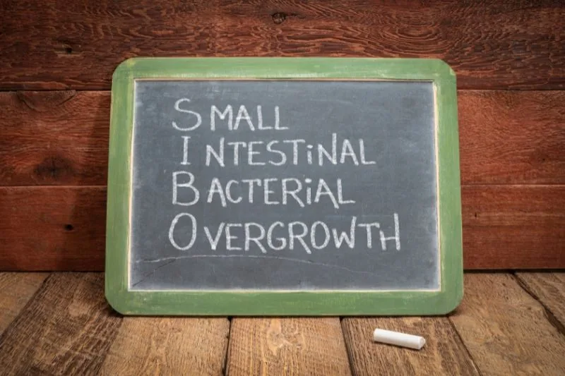

全面解析 SIBO

之前就已經聊過 SIBO 的，但站在巨人的肩膀上可以讓我們看得更遠，我今天重點整理一位 小腸細菌過度生長（SIBO）領域的知名專家Michael Ruscio醫師 的書籍以及文章，從他的角度來看看 SIBO。（此內容不取代醫療建議，如需協助請諮詢專業醫療人員）
以防有人對其不了解，我們還是簡單解釋一下什麼是 SIBO。小腸細菌過度生長（Small Intestinal Bacterial Overgrowth, 簡稱 SIBO） 是指 小腸中一種類型的微生物失衡（dysbiosis），雖然大多數腸道細菌集中在大腸，但健康的小腸應僅有少量的有益細菌。然而，一些 消化系統問題，特別是慢性炎症，可能導致小腸內的細菌數量增加，無論是好菌還是壞菌都可能過度繁殖 。這種細菌過多的情況會引起 消化系統和全身健康上的各種問題，SIBO 在成人中的發病率可能介於 2.5% 到 22%。
SIBO 的症狀和表現 不僅局限於腸胃道，還可能影響身體其他部位，這是因為 消化系統與其他系統之間有著密切的連結。例如，腸道問題可能透過 腸道與皮膚連結（Gut-Skin Connection） 反映在皮膚上，引起 痤瘡或濕疹；透過 腸道與大腦連結（Gut-Brain Connection） 導致 腦霧、焦慮或憂鬱；透過 腸道與關節連結（Gut-Joint Connection） 引發 關節疼痛或慢性炎症；甚至透過 腸道與甲狀腺連結（Gut-Thyroid Connection） 影響甲狀腺功能，導致 甲狀腺疾病。
消化系統和非消化系統的多重症狀 常常是判斷 SIBO 的重要指標。典型的消化系統症狀包括 腹脹、胃酸逆流和便秘，而非消化系統症狀則可能表現為 關節疼痛和腦霧。研究顯示，約 30% 到 40% 的患者，若同時出現這些症狀，其病因很可能是 SIBO。這也解釋了為何 SIBO 的影響遠超過消化道本身，它是一個 系統性問題，可能對 整體健康造成深遠影響。
SIBO 是 小腸細菌數量異常增多所引起的問題，其症狀不僅限於腸胃道，還可能波及全身。典型的消化系統症狀包括 腹脹、胃酸逆流、腹部痙攣、排氣過多、腹瀉、便秘或兩者交替，這些症狀與 腸躁症（IBS）非常相似，多項研究證實 SIBO 在 IBS 患者中非常普遍。此外，SIBO 也與甲狀腺功能減退、乳糜瀉及非乳糜瀉型麩質敏感密切相關。非消化系統症狀則包括 疲勞、情緒問題（如憂鬱、焦慮）、腦霧、玫瑰斑、不安腿症候群、關節疼痛和頭痛。雖然這些症狀與 SIBO 的關聯可能不直觀，但研究已證實針對 SIBO 的治療能改善上述問題，特別適合那些 其他方法無效的患者。
SIBO 根據細菌活躍時釋放的氣體類型分為 四種類型：氫型、甲烷型、硫化氫型及混合型。無論類型如何，SIBO 都會對小腸造成損害，包括引起 發炎、吸收不良、維生素缺乏（如維生素 B12）及營養不良。然而，這些類型並不影響治療方法的選擇，治療可統一進行，症狀的改善不受類型限制。
診斷 SIBO 的標準方法是 呼氣測試（乳果糖或葡萄糖測試），但其 費用高昂且準確性有限，因此不一定必要。Ruscio 醫師更傾向以症狀為指導，若症狀符合 SIBO，即使測試結果為陰性，也建議進行治療。SIBO 的療法對多種腸胃及非腸胃症狀均有效，無需依賴檢測結果。可選用 草本抗菌療法作為替代，進行 安全、自然的腸道修復治療。
SIBO 的成因主要包括 「不正常」的細菌移動、腹部手術影響及藥物干擾 等多種因素。胃酸不足 時，口腔細菌可穿過胃部進入小腸定殖，利用未完全消化的食物進行發酵，產生氣體並引發 腹脹、腹痛等症狀。消化道蠕動緩慢 時，大腸細菌可能逆流至小腸，這種情況常見於 食物中毒或旅遊者腹瀉後，腸道蠕動功能受損進一步助長細菌過度生長。腹部手術如胃繞道或結腸切除術，可能導致 腸道縮短或沾黏形成食物滯留區，為細菌滋生提供條件。此外，藥物如 NSAID 止痛藥及氫離子幫浦抑制劑（PPIs），可能破壞小腸的菌群平衡，增加 SIBO 的風險。
治療 SIBO 的策略包括 暫時性的低 FODMAP 飲食、益生菌使用，以及必要時加入抗生素或草本抗菌療法。低 FODMAP 飲食透過減少特定碳水化合物（如低聚醣和多元醇）的攝取，切斷細菌養分來源，有助於緩解症狀。此飲食通常維持 4 至 8 周，並在 專業醫療人員指導下進行。一項研究顯示，低 FODMAP 飲食可降低 SIBO 發生率約 30%，搭配益生菌則可達 40%。儘管針對 SIBO 的直接研究有限，但根據 Ruscio 醫師臨床經驗和針對 IBS 的研究均顯示 其對 腹痛和腹脹等症狀有明顯效果，為 SIBO 的有效短期干預手段之一。
Ruscio 醫師也建議使用元素飲食治療 SIBO，元素飲食的內容和原理在於提供 易吸收的基礎營養，同時排除纖維和益生元等細菌養分，幫助 腸道休息並減少細菌過度生長。然而，元素飲食在我看來施行上較為困難，尤其是對於無法取得專門產品的患者。因此，轉而專注於其他如 低 FODMAP 飲食的方式，可能會是更實際的選擇。
益生菌在治療 SIBO 中能顯著提升療效，單用益生菌即可有效改善症狀，與抗生素效果相當，而與抗生素結合使用時，清除率更高。益生菌能減少炎症、平衡腸道菌群及修復腸道屏障，改善吸收不良並減輕症狀。此外，益生菌還能減少抗生素治療的副作用如腹瀉，並有助於 緩解抑鬱、焦慮及提升認知功能和甲狀腺健康。Ruscio 醫師建議採用三合一益生菌療法，結合 Lactobacillus 和 Bifidobacterium 菌株、Saccharomyces boulardii 和土壤菌益生菌，試用 四週並觀察症狀改善情況，若 低 FODMAP 飲食及益生菌已緩解症狀，無需進一步治療；若效果有限，則應考慮加入 抗生素或草本抗菌療法。
如果 飲食調整和益生菌治療約一個月後症狀未改善，可考慮使用 抗生素或草本抗菌療法。Ruscio 醫師最常推薦的抗生素是 rifaximin，其 清除 SIBO 的效果約為 50% 至 60%，若結合益生菌使用，清除率可提升至 86%，並減少抗生素相關副作用如腹瀉。然而，由於 rifaximin 價格昂貴且可能不在健保範圍內，部分患者可能選擇 草本抗菌療法作為替代。
草本療法中，牛至油（Oil of oregano） 是一種廣譜抗菌劑，對細菌、真菌和寄生蟲均有效，另有 小檗鹼（Berberine） 和甜艾草（Sweet wormwood） 等成分，也常見於抗菌配方中。研究顯示，草本抗菌療法搭配溶解生物膜的酶可達到約 40% 的清除率，若結合益生菌，效果接近抗生素與益生菌的聯合治療。草本療法起效時間較長，通常需 至少一個月，但對身體更溫和，且 不會導致抗藥性菌株如 MRSA 的產生，是抗生素的有效替代選項之一。
希望本文 重點整理 能幫助有需要的人辨識 SIBO 的徵兆，並與醫療專業人員討論合適的治療方案，恢復腸道健康，改善生活品質。
 空腹小雞跟思思醫師一起斷食，順便養一隻小雞來養小雞 →
空腹小雞跟思思醫師一起斷食，順便養一隻小雞來養小雞 →
好朋友週信
每週五一封：《健康駭客週報》這集的研究重點，加上家醫專欄這週的新文章。免費，隨時可以退訂。
延伸閱讀

站在專家的肩膀看－子宮肌瘤
Lara Briden 的《Hormone Repair Manual》認為子宮肌瘤與雌激素主導有關，可從維他命D、飲食與生活著手，嚴重仍需就醫。

學會這些方法，真正的減重智慧
減重應避免每天量體重和過度依賴體組成數據，改用量圍度、計算週平均體重、拍照記錄等更準確的方式追蹤身形改變。

令人困擾的腦霧
腦霧由血糖波動、腸道菌群失衡、慢性發炎、荷爾蒙失衡、毒素累積和睡眠不足等多重因素引起，可通過調整飲食和生活方式改善。